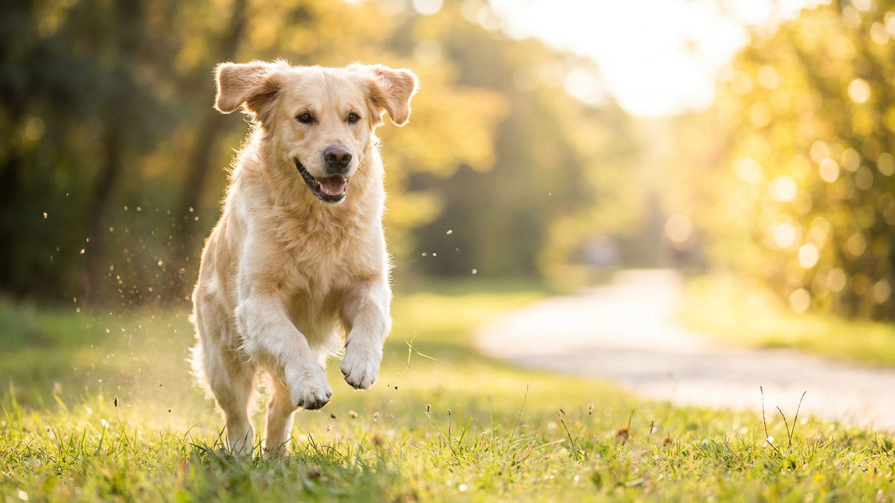

Первое, что замечают гости — не размер бордоского дога, а мокрые следы на полу и брюках. Слюни — это не дефект, это порода. Зато у этого молоссоидного великана редкий для таких габаритов характер: спокойный, преданный, без беспричинной агрессии. Если вы думаете завести бордоского дога — этот разбор сэкономит вам несколько месяцев ошибок.
🐾 У вас бордоский дог?
AnimaLife соберёт уход под породу: к каким болезням есть склонность, что проверять по возрасту, чем кормить и когда пора к врачу. Бесплатно, прямо в мессенджере.
Собрать план ухода → Собрать в MAX →
У вас iPhone? AnimaLife есть в App Store
Бордоский дог слюнявит постоянно — особенно после воды, еды, при жаре и возбуждении. Складки вокруг рта работают как «резервуар»: набирают слюну и периодически выплёскивают. К этому просто нужно адаптировать быт.
Если слюна резко изменила цвет, запах или количество — повод показать бордоского дога ветеринару без откладывания.
Глубокие кожные складки бордоского дога — одна из главных особенностей породы и одна из главных зон ухода. Внутри складок тепло и влажно: без регулярной чистки там быстро появляется раздражение.
Бордоский дог — брахицефал: короткая морда означает укороченные верхние дыхательные пути. В жару и духоту это становится реальной проблемой. Порода плохо переносит температуру выше 25 °C при высокой влажности.
Учащённое дыхание, открытый рот в покое, синюшность дёсен — сигналы, при которых нужно немедленно перенести собаку в прохладу и вызвать ветеринара.
До полутора лет скелет бордоского дога активно формируется. Перегрузка в этот период — главная причина проблем с суставами во взрослом возрасте. Порода и без того несёт большую массу тела на лапах.
Бордоский дог — охранник по природе, но без истеричности. Порода спокойна внутри дома, привязана к семье, осторожна с чужими. Громкий лай — скорее исключение, чем фон.
Для комфортного содержания нужно пространство: квартира-студия 30 м² — не лучший вариант. Собаке нужно место, где она может лечь в полный рост и не мешать движению в комнате. Вольер на улице без постоянного контакта с семьёй — тоже не для этой породы: бордоский дог страдает без людей.
Средняя продолжительность жизни — 8–10 лет. Это меньше, чем у мелких пород, и это надо принять заранее. Регулярные ветеринарные чек-апы начиная с 5 лет помогают сохранить качество жизни на максимуме.
Материал носит информационный характер и не заменяет очную консультацию ветеринара.
🐾 Ваш питомец — бордоский дог?
Заведите профиль в AnimaLife: приложение запомнит породу, возраст и вес и будет подсказывать по уходу именно для неё. Вопросы AI-ветеринару — круглосуточно и бесплатно.
Завести профиль → Завести в MAX →
У вас iPhone? AnimaLife есть в App Store
🐾 Понравился разбор?
Подпишитесь на канал — каждый день разбираем по одному тревожному симптому у кошек и собак: что в пределах нормы, а когда пора к врачу. Подпишитесь, чтобы не пропустить разбор, который может спасти здоровье вашего питомца.